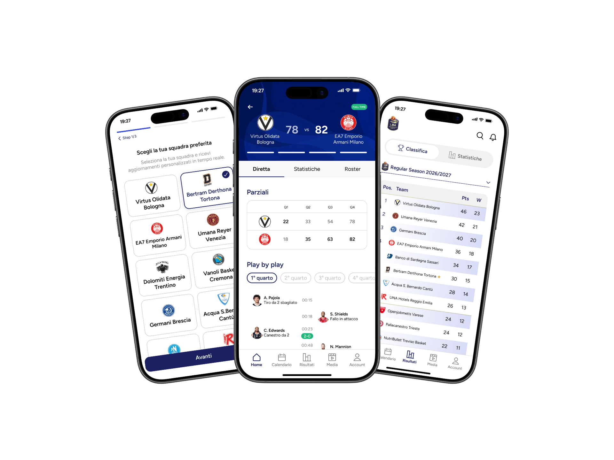
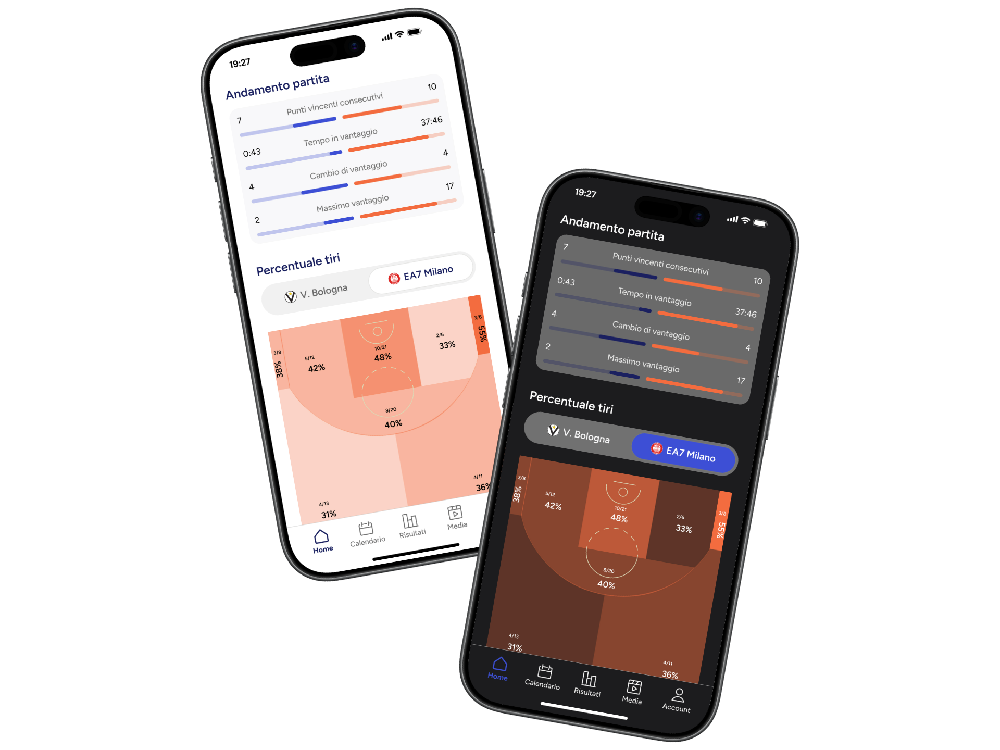
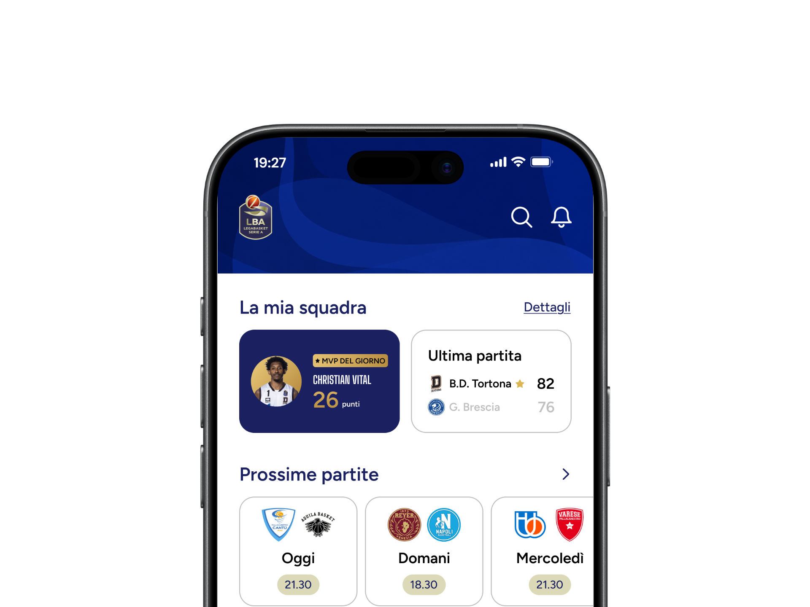
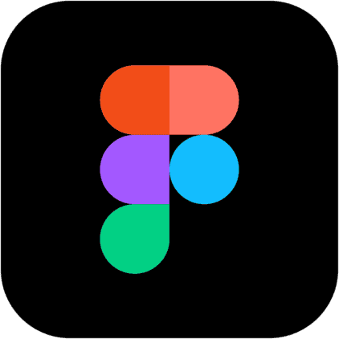
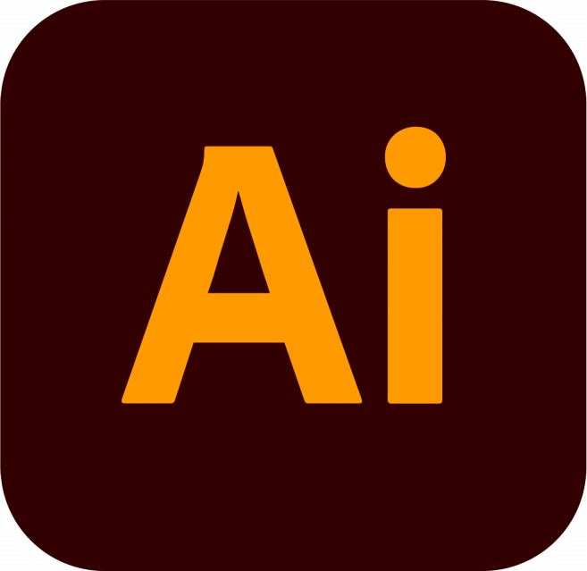
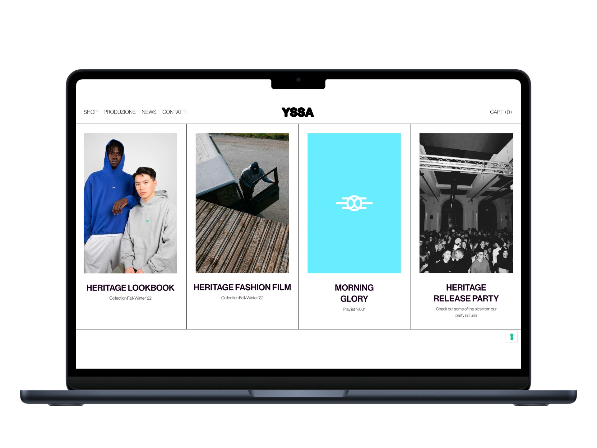
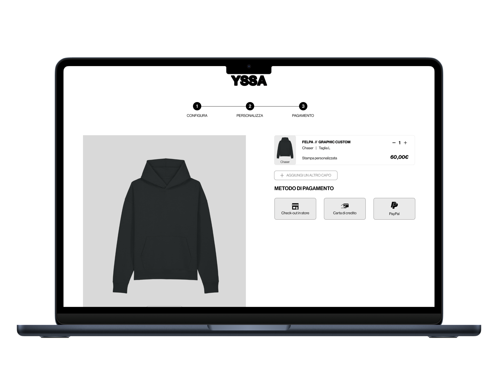
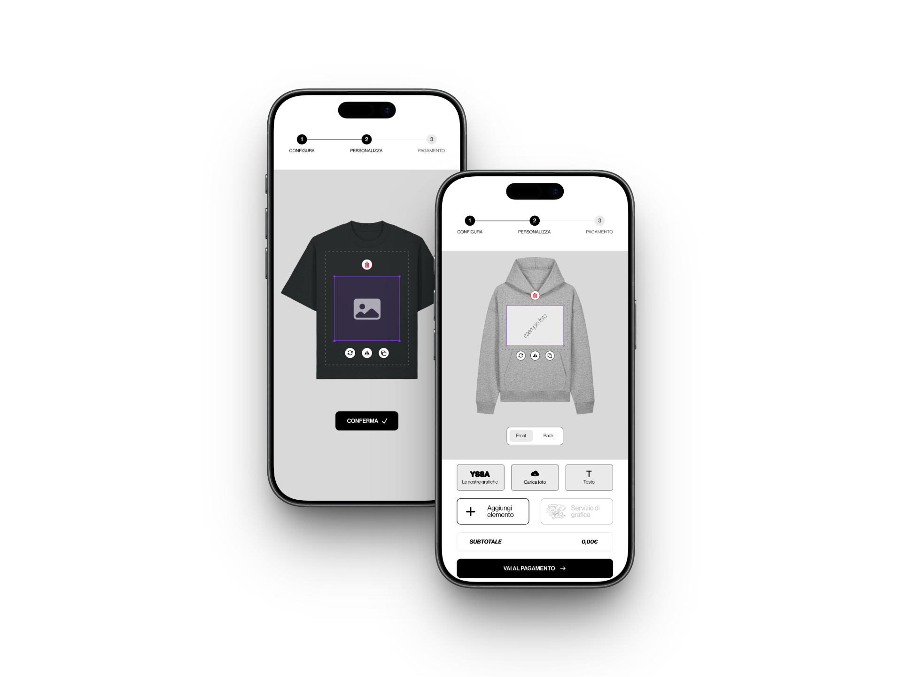
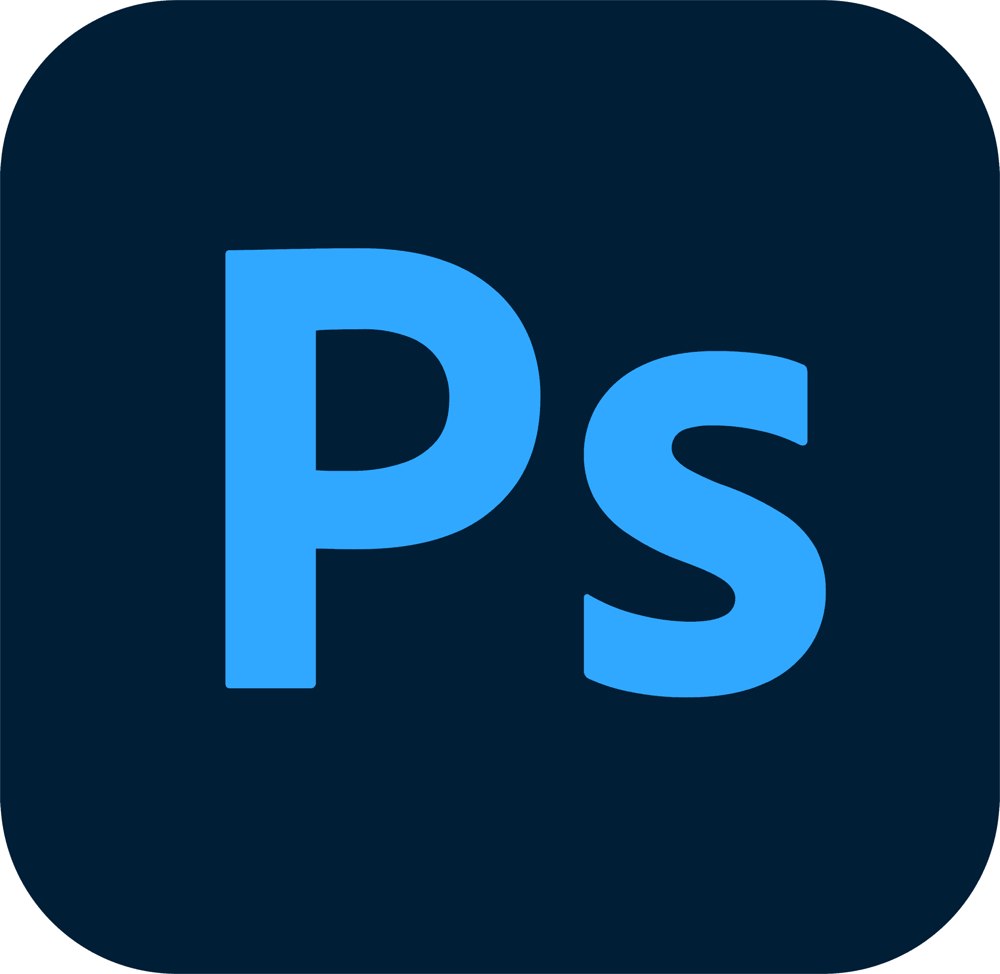
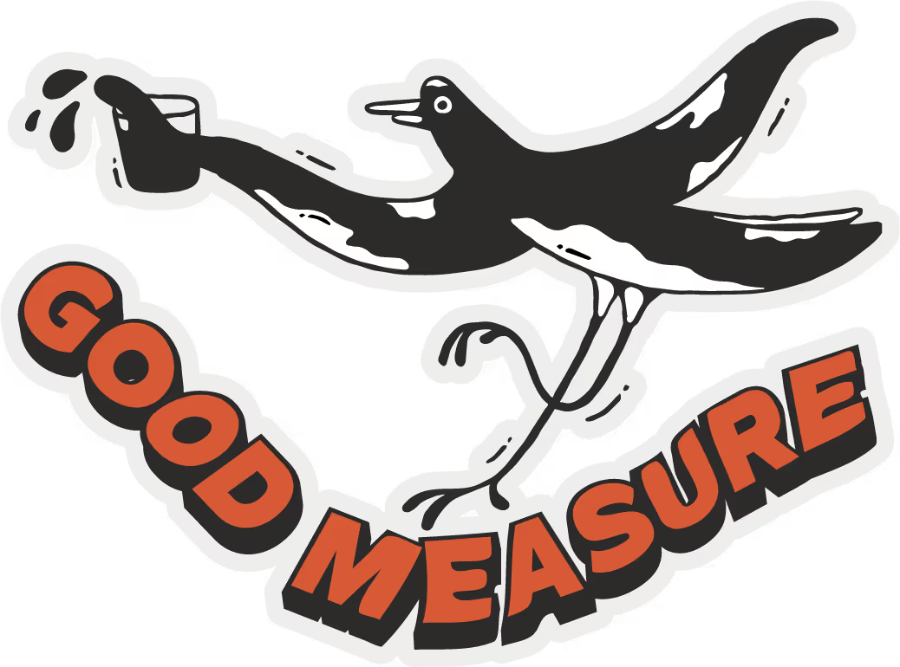

PORTFOLIO
TORINO / MELBOURNETURIN / MELBOURNE
/
MARCO LENTA
UX/UI DESIGNER & DIGITAL DESIGNER
Sono un torinese con il cuore in Australia e il corpo dove capita. Progetto interfacce ed esperienze digitali: parto dalla ricerca sui competitor e dalle user journey, costruisco flussi e prototipi in Figma e li porto fino al visual design. Una laurea in ICT e 3 anni di comunicazione digitale mi danno un doppio background pratico e creativo. Negli ultimi 2 anni ho viaggiato tra Europa, Asia e Oceania, sviluppando una forte inclinazione verso tutto ciò che è dinamico e, soprattutto, umano.Born in Italy, with my heart in Australia and my body wherever it lands. I design digital interfaces and experiences: I start from competitor research and user journeys, build flows and prototypes in Figma, and carry them through to visual design. A degree in ICT and 3 years of digital communication give me a double background, practical and creative. Over the last 2 years I've travelled across Europe, Asia and Oceania, developing a strong pull towards everything dynamic and, above all, human.
EducazioneEducation
2026 - Master UX/UI design & AI agents2026 - Master's in UX/UI design & AI agents
2020/24 - Laurea in ICT2020/24 - Bachelor's degree in ICT
EsperienzaExperience
YSSA Factory
Torino / digital designer & social media managerTurin / digital designer & social media manager
Good Measure
Melbourne / digital designer & social media manager
O.G.I. Melbourne
Melbourne / social media manager
Synesthesia
Torino / digital communication internTurin / digital communication intern
Il basket italiano, ridisegnatoItalian basketball, redesigned
UX/UI DESIGN

The Wave, digital agency, ha commissionato al mio gruppo del master in UX/UI Design di Boolean il redesign completo dell'applicazione mobile della Lega Basket Serie A.
Il redesign comprende i flussi ad alto impatto: homepage, live match view, box score, statistiche, sezione intrattenimento, classifiche e stagione.
L'intera progettazione delle schermate su Figma è guidata da user journey e gerarchia delle scelte UI per comunicare energia e identità sportiva.The Wave, a digital agency, commissioned my team on Boolean's UX/UI Design master's programme to deliver a full redesign of the Lega Basket Serie A mobile app.
The redesign covers the high-impact flows: homepage, live match view, box score, statistics, entertainment section, standings and season.
Every screen was designed in Figma around user journeys and a clear hierarchy of UI choices, to convey energy and sporting identity.
Il redesign comprende i flussi ad alto impatto: homepage, live match view, box score, statistiche, sezione intrattenimento, classifiche e stagione.
L'intera progettazione delle schermate su Figma è guidata da user journey e gerarchia delle scelte UI per comunicare energia e identità sportiva.The Wave, a digital agency, commissioned my team on Boolean's UX/UI Design master's programme to deliver a full redesign of the Lega Basket Serie A mobile app.
The redesign covers the high-impact flows: homepage, live match view, box score, statistics, entertainment section, standings and season.
Every screen was designed in Figma around user journeys and a clear hierarchy of UI choices, to convey energy and sporting identity.
GALLERY / LEGA BASKET SERIE A

LIVE MATCH
La navigazione tra diretta, statistiche e roster orienta l'utente. Grafici e chart traducono i dati in informazioni rapide da leggere.
Possibilità di alternare tra tema chiaro e scuro per garantire massima leggibilità di giorno e comfort visivo di sera.Moving between live, statistics and roster keeps the user oriented. Graphs and charts turn data into information that reads at a glance.
Light and dark themes can be switched to guarantee maximum legibility by day and visual comfort at night.
Possibilità di alternare tra tema chiaro e scuro per garantire massima leggibilità di giorno e comfort visivo di sera.Moving between live, statistics and roster keeps the user oriented. Graphs and charts turn data into information that reads at a glance.
Light and dark themes can be switched to guarantee maximum legibility by day and visual comfort at night.

HOMEPAGE
I contenuti sono riordinabili: l'utente definisce le priorità, per un'esperienza al 100% personalizzabile.
La homepage ha una gerarchia visiva chiara: card distinte, colori identitari e tipografia riorganizzata, così da rendere la lettura immediata.Content is reorderable: the user sets the priorities, for a 100% customisable experience.
The homepage has a clear visual hierarchy: distinct cards, identity colours and reorganised typography make it immediately readable.
La homepage ha una gerarchia visiva chiara: card distinte, colori identitari e tipografia riorganizzata, così da rendere la lettura immediata.Content is reorderable: the user sets the priorities, for a 100% customisable experience.
The homepage has a clear visual hierarchy: distinct cards, identity colours and reorganised typography make it immediately readable.
case study & prototipo ↗case study & prototype ↗



Il capo lo disegna chi lo indossaThe wearer designs the garment
UX/UI DESIGN

YSSA Factory è un brand di produzione abbigliamento, serigrafia e servizi di branding. In vista dell'apertura di un nuovo punto vendita print express, mi è stato chiesto ridisegnare il sito web e la web app con cui personalizzare i capi tramite grafiche, immagini o testi.
Ho studiato come competitor e brand streetwear si muovono sulla personalizzazione, per poi sviluppare un prototipo che permette di costruire il proprio capo con le grafiche del brand, immagini personali e testi a scelta.
Dopo un MVP per definire i processi di user experience, ho disegnato le schermate mobile e desktop su Figma, dalle pagine del sito ai flussi dell'app, con un visual design coerente con lo stile del brand, da sempre minimal e d'impatto nella scena streetwear torinese.YSSA Factory is a clothing production, screen printing and branding brand. Ahead of the opening of a new print express store, I was asked to redesign the website and the web app used to customise garments with graphics, images or text.
I studied how competitors and streetwear brands approach customisation, then developed a prototype that lets people build their own garment with the brand's graphics, personal images and text of their choice.
After an MVP to define the user experience processes, I designed the mobile and desktop screens in Figma, from the site pages to the app flows, with a visual design consistent with the brand's style, minimal and striking in Turin's streetwear scene.
Ho studiato come competitor e brand streetwear si muovono sulla personalizzazione, per poi sviluppare un prototipo che permette di costruire il proprio capo con le grafiche del brand, immagini personali e testi a scelta.
Dopo un MVP per definire i processi di user experience, ho disegnato le schermate mobile e desktop su Figma, dalle pagine del sito ai flussi dell'app, con un visual design coerente con lo stile del brand, da sempre minimal e d'impatto nella scena streetwear torinese.YSSA Factory is a clothing production, screen printing and branding brand. Ahead of the opening of a new print express store, I was asked to redesign the website and the web app used to customise garments with graphics, images or text.
I studied how competitors and streetwear brands approach customisation, then developed a prototype that lets people build their own garment with the brand's graphics, personal images and text of their choice.
After an MVP to define the user experience processes, I designed the mobile and desktop screens in Figma, from the site pages to the app flows, with a visual design consistent with the brand's style, minimal and striking in Turin's streetwear scene.
GALLERY / YSSA CUSTOM APP
SCELTA DEL CAPOGARMENT CHOICE
I flussi di scelta capo, colore e taglia precedono la personalizzazione vera e propria: pochi passaggi, sempre reversibili, con l'anteprima del capo sempre visibile.The garment, colour and size flows come before the customisation itself: few steps, always reversible, with the garment preview always in view.


PERSONALIZZAZIONECUSTOMISATION
La personalizzazione regala all'utente un momento di creatività: uno spazio in cui esprimere le proprie idee, visibili da subito in negozio durante la stampa express.Customisation gives the user a moment of creativity: a space to express their own ideas, printed in store right away.
yssafactory.com ↗

2026 / SOCIAL & CONTENT
Da bottega a hub creativoFrom workshop to creative hub
YSSA Factory
YSSA Factory è un brand di produzione abbigliamento che svaria tra serigrafia, stampe digitali e servizi di branding.
Sono stato assunto con l'obiettivo di creare contenuti grafici, foto e video per raccontare i progetti e l'anima artigianale del brand.YSSA Factory is a clothing production brand working across screen printing, digital printing and branding services.
I was hired to create graphic, photo and video content telling the story of its projects and the craft soul of the brand.
Sono stato assunto con l'obiettivo di creare contenuti grafici, foto e video per raccontare i progetti e l'anima artigianale del brand.YSSA Factory is a clothing production brand working across screen printing, digital printing and branding services.
I was hired to create graphic, photo and video content telling the story of its projects and the craft soul of the brand.
Ho studiato come competitor e brand streetwear si muovono riguardo alla serigrafia su tessuto, per poi sviluppare una strategia di comunicazione digitale che comunicasse il lavoro artigianale del brand, la creatività e la cultura pop.I studied how competitors and streetwear brands approach screen printing on fabric, then built a digital communication strategy conveying the brand's craftsmanship, its creativity and its pop culture references.
Ho poi sviluppato un piano editoriale con 3 tipi di contenuti principali: case study, video/reel di brand identity e shooting dei capi di abbigliamento.I then developed an editorial plan with three main content types: case studies, brand identity videos/reels and garment shoots.
@yssafactory ↗
+800
followerfollowers
3
format editorialieditorial formats
GALLERY / YSSA FACTORY
Shooting capi, backstage serigrafia, frame dai reel e graphic design per materiali di branding.Garment shoots, screen-printing backstage, frames from the reels and graphic design for branding materials.

Good Measure
Good Measure, uno dei più iconici caffè di Melbourne, mi ha affidato la gestione autonoma dei contenuti social: dalla creazione di grafiche per eventi, alla fotografia e creazione di reel sulla quotidianità del locale, fino alle interviste ai membri del team.Good Measure, one of Melbourne's most iconic cafés, handed me full ownership of its social content: from designing graphics for events to photography and reels capturing daily life in the café, through to interviews with the team.
Ho sperimentato diverse tipologie di contenuti, seguendo la mia passione per la fotografia e per la musica.
Ho cercato di comunicare l'atmosfera vibrante e la creatività che pulsano nelle strade di questa città, considerata la più artistica e multiculturale di tutta l'Australia, un punto di riferimento per artisti e creativi da tutto il mondo.I experimented with different content formats, following my passion for photography and music.
I tried to convey the vibrant atmosphere and the creativity running through the streets of this city, considered the most artistic and multicultural in Australia, a landmark for artists and creatives from all over the world.
@goodmeasure ↗
Ho cercato di comunicare l'atmosfera vibrante e la creatività che pulsano nelle strade di questa città, considerata la più artistica e multiculturale di tutta l'Australia, un punto di riferimento per artisti e creativi da tutto il mondo.I experimented with different content formats, following my passion for photography and music.
I tried to convey the vibrant atmosphere and the creativity running through the streets of this city, considered the most artistic and multicultural in Australia, a landmark for artists and creatives from all over the world.
+4k
followerfollowers
RTI
interviste in codainterviews in the queue
2025 / SOCIAL & CONTENT
La fila diventa contenutoThe queue becomes the story
GALLERY / GOOD MEASURE
Campagna fotografica con Fujifilm X-E4, dettagli del locale e graphic design.Photo campaign shot on a Fujifilm X-E4, café details and graphic design.
X-E4